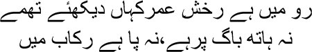

22

The horse of life gallops on, let’s see where it’ll stop
My hands are not on the reins, nor my feet in the stirrups
ou went to Calcutta, Mirza sahib, and Bombay called me. I was sitting in Amritsar without any work whatsoever. After my father’s death even the responsibility for looking after my mother fell on me. But we had no income. We lived on bibijaan’s savings, but how long would they last? Unless I started earning, both mother and son would have to starve to death. Suddenly fortune smiled on us. Nazir Ludhianvi summoned me from Bombay. Come and see me in Bombay immediately. Bibijaan burst into tears when I told her. ‘How will you go to Bombay alone, beta? Do you know Bombay? I’ve heard it’s a very big city. Who’s going to look after you?’
Yes, my elder sister Iqbal did live in the neighbourhood of Mahim in Bombay, but her husband couldn’t stand me. He had never let me enter their home.
— What will I do in Amritsar, bibijaan? I won’t get a job here. Something or the other is bound to turn up in Bombay. And since Nazir sahib himself has called me …
— I’ve heard your sister say people don’t spare even a moment for one another in that city, beta …
— What’s wrong with that? Let me make an attempt at least, bibijaan.
I was twenty-four then. Leaving bibijaan in the hands of the lord, I responded to the call of Bombay. If I hadn’t seen Bombay, my brothers, I would never have known the variety of methods that people in this world use for survival. No other city has the kind of disparities that exist between the upper and lower levels of Bombay. In the upper storeys, money flies around all the time; there are dazzling lights and glamour everywhere. And downstairs there is a matching degree of hunger, darkness, murder. But there are secret passages between the two levels too. Extraordinary stories, all of them.
Nazir Ludhianvi put me to work. I became the editor of his weekly magazine Musawar. The salary was forty rupees a month. I was delirious with joy. It was like having the bloody moon in my hands. I made arrangements to live in a room at the office, but it didn’t prove convenient. Because I lived in the office, Nazir sahib began to disturb me at all hours. How could I explain to the man that I had not been born to slave away at a newspaper? I had to do my own reading and my own writing; most important, I wanted to be left alone. So I decided that I would have to rent a place to stay in.
My monthly earnings were forty rupees. You couldn’t get decent accommodation in Bombay at that price. I moved into a shack, a kholi, with a monthly rent of nine rupees. Some shack it was! Only if you saw it would you realize how hard it was to tell whom it was meant for—a human or a rat. Forty cubbyholes in a ramshackle two-storeyed building that never got any sunlight. It was perpetually damp, and you needed lights even in the daytime. Mosquitoes, rats, insects—you name them and they were there. It was in that kholi in Bombay that I first saw dozakh, Mirza sahib. Even if you were to die in one of those kholis no one would come asking after you. No one knew how many men and women and children occupied those forty shacks. Just two bathrooms with broken doors for the whole lot of us to shit and piss and bathe in. I would wake up before everyone else, bathe and get out. I’d be in office all day and return late at night, roasting in the fatigue of the day and the heat of the shack as I fell asleep.
Since I’m telling you about my days in this slum, I must tell you Muhammad bhai’s story too. Of all the unusual people I met in Bombay, Muhammad bhai was unique. My kholi was in Arab Gali. I must explain. Foras Road was famous for its whorehouses. A bend in the road after Foras Road led to Safed Gali. It was full of cafes and restaurants. There were brothels everywhere, with whores of all castes and creeds from India. Beyond Safed Gali was a cinema hall, Playhouse, where films ran round the clock. A man standing outside would be shouting constantly, ‘Come in, come in, only two annas for a first-class ticket.’ He would even force uninterested people into the hall. There was another interesting breed there—the masseur, the maalishwala. People would stop on the road at any time of day or night for a head massage. Some of them would sing as they soaked up the pleasure with closed eyes. I enjoyed the sight. The women would operate in tiny rooms behind bamboo blinds. Their charges? Anywhere between eight annas and eight rupees. Or between eight rupees and eight hundred. In this market you could examine all the wares and buy fresh meat according to your wish.
About twenty-five Arabs lived in Arab Gali; apparently their business was trading in pearls. The others who lived in this lane were either Punjabi or Rampuri. Muhammad bhai used to live in this same Arab Gali. Whether the rest of us kept track of one another or not, I was told that Muhammad bhai kept track of everyone. Being a native of Rampur, he was an expert with both the stick and the knife. Overcoming two dozen opponents at one go was all in a day’s work for him. I heard many tales about his prowess with the knife. Apparently his skill was so silken that the victim did not even realize that he had died. But everyone swore unanimously that Muhammad bhai did not chase women. I’d heard that he helped poor beggar girls. His helpers would give them some money every day. I didn’t know what his line of business was, but I heard that his clothes were immaculate, that he ate well, and that he moved about the neighbourhood with his cohorts in a glittering tonga. But most of his time was spent at the Irani café. So, I had long wanted to meet this Muhammad bhai. But because I left early in the morning and returned late at night, I’d had no opportunity. I had heard an extraordinary story about him from Ashiq Husain, who used to live in the kholi next to mine. He was a dancer in films.
One day, he happened to say in the course of a conversation, ‘No one can match up to Muhammad bhai, Manto sahib.’
— Why, has he done something for you?
— When I got cholera, Muhammad bhai got to know and turned up. Do you know what happened after that? Every doctor on Foras Road appeared in my kholi. Muhammad bhai only said, if anything happens to Ashiq, I won’t spare a single one of you. The doctors were quaking in their boots.
— And then?
— I recovered in a couple of days. He’s an angel, Manto bhai, nothing but an angel.
There were many other tales about Muhammad bhai. Apparently he always had a sharp dagger strapped to his thigh. He often displayed his skill with it, with the smile intact on his face. All these stories had me conjure up a certain image of the man. Tall, muscular, a figure who made your blood run cold at first glance. But I hadn’t actually seen him yet. I realized I simply had to take a day off work for a look at him. But there were many pressures at the magazine, where I had to do practically everyone’s job—from the editor’s to the bearer’s.
One day, I was struck down by a bout of fever. I couldn’t even get out of bed. Ashiq had gone home to his village. I spent two days alone in my kholi. A boy from the Irani café came by with food at regular intervals. Who would enquire about me in Bombay? Even Nazir sahib did not know where I lived. Had I died, no one would have got to know.
On the third day, I decided that I simply had to get to a doctor somehow. Suddenly there was a knock on the door. I thought the boy from the café was here. —Come in.
Opening the door, I found a man outside. The first thing that caught my eye was his enormous moustache, which he was twirling with both hands. It occurred to me that he was so ordinary that no one would give him a second glance if it weren’t for the moustache. He entered the room with four or five people in tow. Then he said in a soft voice, ‘Vimto sahib …’
— Manto, not Vimto.
— It’s bloody same. This isn’t good, Vimto sahib. Why didn’t you let me know that you have a fever?
— Who are you?
Flashing a look at his companions, he said, ‘Muhammad bhai.’
I sat up in my bed with a start. —Muhammad bhai, Muhammad bhai … dada?
— Yes, Vimto sahib, I’m Muhammad, dada. The boy at the café told me you’re very sick. This bloody hell isn’t good news. You didn’t let me know. Bloody Muhammad bhai loses his temper when such things happen. Now he looked at his cohorts. ‘You … what’s your name, you swine? Go to that bloody doctor. Tell him that Muhammad bhai has asked him to come, on the double. And tell the bloody doctor to bring all his instruments.’
As I watched Muhammad bhai, all the stories I’d heard about him ran through my head. But this wasn’t the Muhammad bhai I had imagined. All I could see was his moustache, and it seemed to me that a man with a gentle disposition had become the dada of the neighbourhood only on the strength of an enormous moustache. I had no chair in my room. So I asked him to sit on the bed. Waving an imaginary fly away, he said, ‘No need to worry about all this, Vimto sahib.’
Muhammad bhai began to pace up and down in my suffocating kholi. At one point I saw his famous dagger flashing in his hand. He was scraping his dagger against his arm, and the hair kept falling off. As I watched, I felt as though my fever had dropped several degrees. ‘The dagger is very sharp, Muhammad bhai,’ I stammered. ‘You might cut yourself.’
— The dagger is for my enemies, Vimto sahib. Why should I cut myself with it? Caressing it, he said, ‘Can a son ever hurt his father?’
The doctor arrived. It was very funny, Mirza sahib, I had become Vimto and the doctor’s name was Pinto.
‘What’s wrong?’ Doctor Pinto mumbled.
— Do you expect me to bloody tell you? If you cannot make Vimto sahib well again, you will bloody well have to pay the price.
Examining me carefully, Doctor Pinto told Muhammad bhai, ‘There’s nothing to worry about, Muhammad bhai. It’s malaria. I’ll give him a shot.’
— I don’t understand any of this, doctor. If you want to give him a shot, give him a bloody shot, but if anything bad happens to him …
— He’ll be fine, Muhammad bhai. I’m giving him the shot then. Doctor Pinto took a syringe and ampoule out of his bag.
— Wait, doctor! Muhammad bhai shrieked. Frightened, the doctor put the syringe back in his bag.
— I cannot take all this bloody injection business. Muhammad bhai left the room with his followers.
Doctor Pinto gave me a quinine injection with great care. ‘How much?’ I asked him.
— Ten rupees.
As soon as I’d taken the money from my wallet and given it to him, Muhammad bhai re-entered. —What the hell is all this?
Doctor Pinto said, his voice quivering, ‘I swear on God, Muhammad bhai, I didn’t ask for anything.’
— If you want bloody money ask me. Return Vimto sahib’s money to him at once. Turning to me, Muhammad bhai continued, ‘How can a doctor from my area take money from you, Vimto sahib? Can this bloody well be allowed? I’ll shave my bloody moustache off if it is. Keep in mind, Vimto sahib, everyone in my neighbourhood is your servant.’
When the doctor had left, I asked, ‘Do you know me, Muhammad bhai?’
— Of course I do. Is there anyone here whom bloody Muhammad bhai doesn’t know? My friend, Muhammad bhai is the king of the neighbourhood, he keeps track of everyone. Do you know how many people I have? They inform me of everything. Who’s visiting, who’s leaving, what everyone’s up to. I know everything about you.
— Is that so?
— If not me, who bloody else? You’ve come from Amritsar, right? You’re a bloody Kashmiri, am I right? You work for a magazine. You owe Bismillah Hotel ten rupees, which is why you don’t take the road that runs past it. Am I right? The paan-seller in Bhindi Bazaar abuses you all the time. You owe him twenty bloody rupees and ten annas for cigarettes.
I stared at him open-mouthed. I thought I was sinking through the floor. Did this man have eyes everywhere?
— No need to be afraid, Vimto sahib. I have paid back all your dues. You can start afresh. Why are you embarrassed, Vimto sahib? Many things happen in our long lives. I’ve told every bloody one not to trouble you. You have Muhammad bhai’s bloody word, no one can mess with it.
I don’t know whether Muhammad bhai heard me or not, but I muttered, ‘May the lord keep you happy.’ Twirling his moustache, Muhammad bhai left with his cohorts.
I recovered in a fortnight. Muhammad bhai and I hit it off. He would often listen to me in silence. Bhai was about five years older than me. His moustache was even longer compared to my age. Later I heard that Muhammad bhai took care of his moustache by putting butter on it every day. I used to wonder which the real Muhammad bhai was—his moustache or his pointed dagger.
One day I met him in front of the Chinese restaurant in Arab Gali. In the course of our conversation, I asked him, ‘This is the era of guns and revolvers, Muhammad bhai. Why do you use a dagger?’
Running his fingers over his moustache, Muhammad bhai answered, ‘There’s nothing as bloody annoying as guns, Vimto sahib. Even a child can fire a gun. Press the trigger, and you’re done. But a dagger … I swear on the lord … using a dagger is something else. What was it you said the other day? Yes, art. Listen, Vimto sahib, using a dagger is an art. And what’s a revolver? A bloody toy.’ He pulled his shining dagger out as he spoke. ‘Look at it, just look at it, look at the bloody edge on it. There’s no sound when you use it. Plunge it into someone’s stomach and give it a twist, that’s it, all over. Guns are rubbish.’
The more time I consorted with Muhammad bhai, the more I wondered why everyone feared him so much. He had nothing besides that enormous moustache to be afraid of. Fear does not flow from anything outside of ourselves, Mirza sahib, it lurks in the darkness within our own hearts.
On my way to office one day, I heard outside the Chinese restaurant that the police had arrested Muhammad bhai. How could this be possible? Bhai was quite thick with the police. Here’s what had happened—there was a prostitute named Shirinbai in Arab Gali. She had a young daughter. The day before bhai was arrested, Shirinbai had thrown herself at Muhammad bhai’s feet. Someone had apparently raped her daughter.
— You’re the dada of the neighbourhood, bhai, and someone rapes my daughter! Aren’t you going to take revenge?
Bhai had apparently abused Shirinbai roundly, and then said grimly, ‘Do you want me to slit the motherfucker’s belly? Go to your kotha, you bitch, I’ll take care of things.’
It was over in half an hour. The man was murdered. But how did the police arrest Muhammad bhai? Bhai didn’t leave any witnesses to such acts, and even if someone had seen, they wouldn’t say anything against him. After two days in the lockup, Muhammad bhai got bail. But he was a different man after he came out. When I met him at the Chinese restaurant, he looked bedraggled, overwhelmed. Before I could say anything, he said, ‘He took so much bloody time to die, Vimto sahib. It’s all my fault. I couldn’t stab him properly.’ Consider, my brothers, how strange it was. He had no regret for killing a man, only for not using his dagger properly.
The closer we got to the day of the court hearing, the more fretful Muhammad bhai became. Talking to him, I realized that he had no idea of what a court was like, and hence his fear. Never mind appearing in court, bhai had never even had to stay in custody. One day he gripped my arm and said, ‘I’ll bloody die rather than appear in court. I’ve never even seen a court.’
Bhai’s cohorts from Arab Gali explained to him that there was nothing to be afraid of. There was no witness, and no one would testify against him. But yes, the magistrate might form an unwelcome impression because of his enormous moustache. A man with a moustache like this had to be a criminal.
One day, while we were sitting at the Irani café, Muhammad bhai took his dagger out and flung it on the street. ‘What are you doing, Muhammad bhai!’ I exclaimed.
— Everyone’s betraying me, Vimto sahib. They’re saying the magistrate will clamp me in bloody jail the moment he sees my moustache. What should I do, tell me?
After a long discussion I said, ‘There’s no evidence against you, but when the magistrate sees your moustache he may well think …’
— Should I get rid of it then? Muhammad bhai looked at me helplessly, twirling his moustache.
— If you think so.
— It doesn’t matter what I think. What’s important is what the bloody magistrate thinks. What do you suggest?
— Then get rid of it.
I saw Muhammad bhai the next day, moustache-less, and even more helpless.
In court it was declared that Muhammad bhai was a dangerous ruffian. He was ordered to leave Bombay. He had just a day in hand. All of us were in the court. Muhammad bhai came out in silence when the verdict was announced. His hand kept stealing its way up to a point beneath his nose.
In the evening Muhammad bhai was having a cup of tea at the Irani café with about twenty of his cohorts. I sat down opposite him. I saw his eyes were focussed on the distance, far beyond the café and the neighbourhood. ‘What are you thinking of?’ I asked.
Muhammad bhai exploded. —The bloody Muhammad bhai you knew is dead.
— Why are you fretting? You have to live, after all. If not in Bombay, somewhere else.
— Listen, Vimto sahib, I don’t care whether I live or die. I took your advice, the bloody idiot that I am, and shaved my moustache off. Since I have to go away, I might as well have taken my moustache along. They should have hanged me instead.
I never saw Muhammad bhai again. I often wondered why he was so attached to his moustache. Was the moustache the real Muhammad bhai? I still don’t know. A few days later I got a letter from bibijaan in Amritsar. She wanted to come to Bombay, she missed me very much. I wrote back, come to Bombay, bibijaan, I am also very lonely here, I never wanted to be so alone.